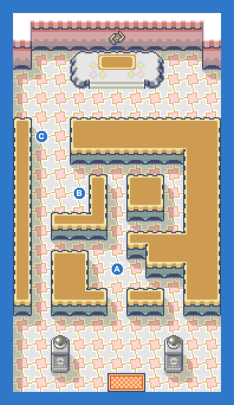
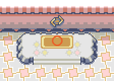

PokémonEMMA'S EMERALD
OFFICIAL Strategy Guide
Rustboro City Gym
TIP
No wild Pokémon in the grass here. Time of day: M = morning (6–10), D = day (10–19), E = evening (19–20), N = night (20–6).
Event 1: Gym Battle: ROXANNE

Rock-type. Her Nosepass is the wall; Water, Grass, Fighting or Ground moves clear the room. On Normal she brings three Pokémon topping out at level 15. Reward: Stone Badge.

CAUTION
Bring your team to LV14-15. The level cap is 15 until you win.Battle
| Leader ROXANNE: Rolycoly LV13; Larvitar LV14; Nosepass LV15 Hard: Geodude LV13; Rolycoly LV13; Larvitar LV14; Nosepass LV15 (ITEM_ORAN_BERRY) Easy: Geodude LV12; Geodude LV12; Nosepass LV15 |
Trainers
| AYoungster JOSH: Geodude LV10 |
| BYoungster TOMMY: Geodude LV8; Geodude LV8 |
| CHiker MARC: Geodude LV8; Geodude LV8 |
| DLeader ROXANNE: Rolycoly LV13; Larvitar LV14; Nosepass LV15 |
10